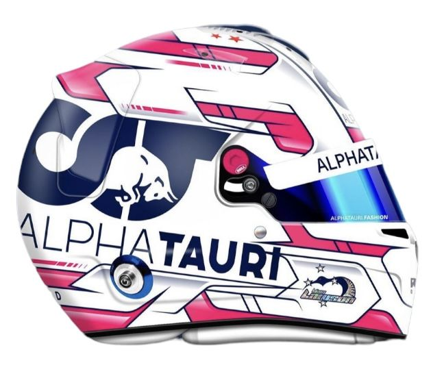
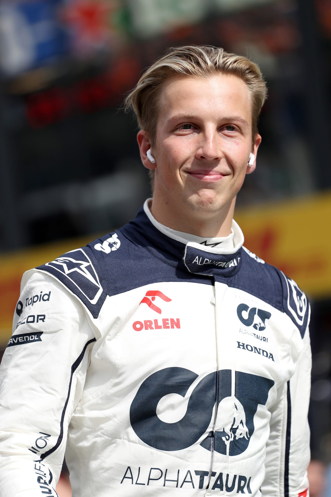
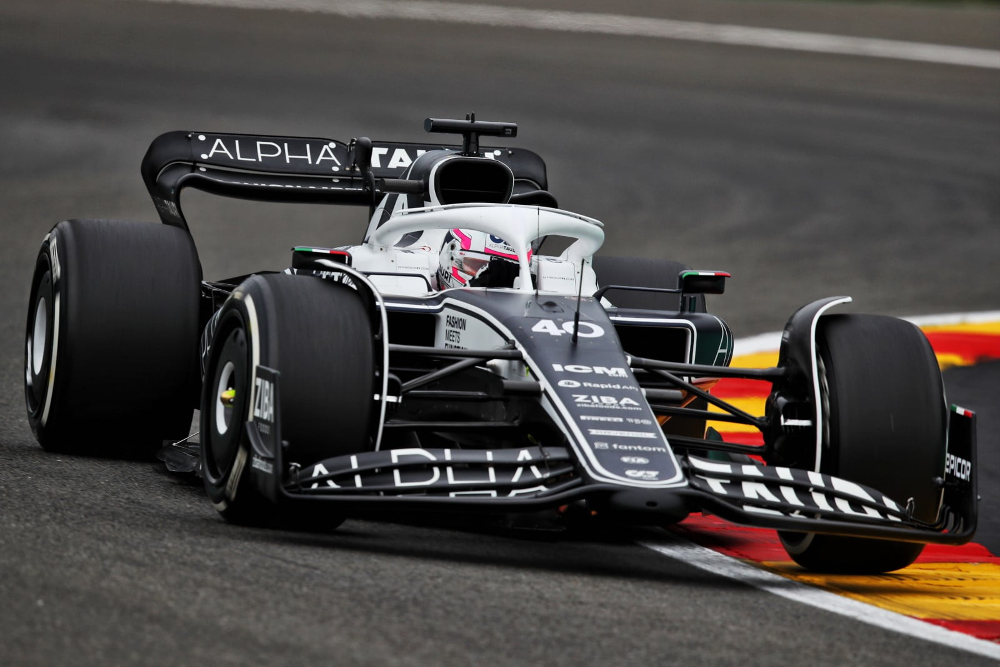

Liam Lawson
- Team: Visa Cash App RB
- Land: Neuseeland
- Geburtsort: Hastings, Neuseeland
- Geburtsdatum: 11.02.2002
- Alter: 22
- Podien: 0
- Grands Prix gefahren: 8
- Weltmeisterschaften: 0
- Team: Visa Cash App RB
- Fahrernummer: 30
Liam Lawson weiß ein oder zwei Dinge darüber, wie man ins kalte Wasser springt. Der Neuseeländer, der auf so ziemlich allen Ebenen des Juniorenmotorsports Rennen gewonnen hat und in den hart umkämpften F3- und F2-Meisterschaften vorne dabei ist, wartete sehnsüchtig auf seine Chance in der Formel 1 als Ersatzfahrer von Red Bull, als sich ihm eine Wendung des Schicksals bot. Nachdem sich AlphaTauri-Pilot Daniel Ricciardo beim Großen Preis der Niederlande 2023 bei einem Trainingsunfall die Hand gebrochen hatte, war Lawson, der als Jugendlicher von der Figur Lightning McQueen aus der Disney-Animation Cars inspiriert wurde, bereit, zuzuschlagen. Nach einem Debüt im unerbittlichen Regen von Zandvoort stand das gesamte Fahrerlager auf und wurde inmitten der intensiven Luftfeuchtigkeit in Singapur aufmerksam, wo der Rookie Weltmeister Max Verstappen brillant auf einen Q3-Platz verwies und am Renntag einige wertvolle Punkte sammelte. Red Bull teilte Lawson kurz vor seinem herausragenden Qualifikationslauf unter den Flutlichtern der Marina Bay mit, dass es für 2024 keinen Platz im Gasthaus geben würde, mit einem umbenannten RB-Team, das mit den geheilten Ricciardo und Yuki Tsunoda wieder Erfahrung und Jugend vereint. Lawson war jedoch schon vorher in dieser Position gewesen. Er unterstrich den Chefs von Red Bull sein Talent, als es darauf ankam und er nur auf die nächste Gelegenheit warten musste. Von allen Orten, an denen sich das Spiel entfalten konnte, löste Singapur eine zweite Wendung des Schicksals aus. Ricciardo würde ausfallen und Lawson wieder einsteigen, während Red Bull versucht, das "große Ganze" mit seinen Fahreraufstellungen für 2025 und darüber hinaus zu verstehen. Es ist eine goldene Gelegenheit für Lawson, sich nicht nur in den RB-Farben zu verankern, sondern auch an die Tür zu einem Red Bull-Aufstieg in seiner bisher turbulenten F1-Karriere zu klopfen. Nur die Zeit wird zeigen, wohin ihn das Abenteuer als nächstes führt.
 